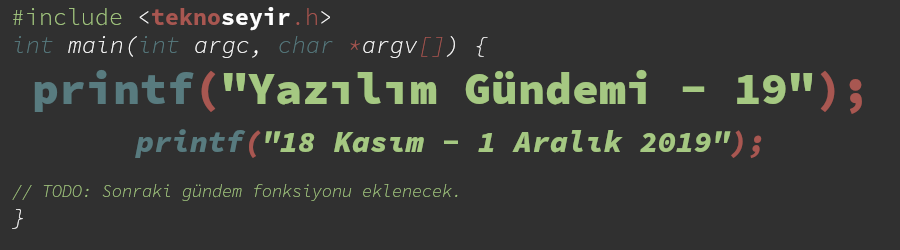
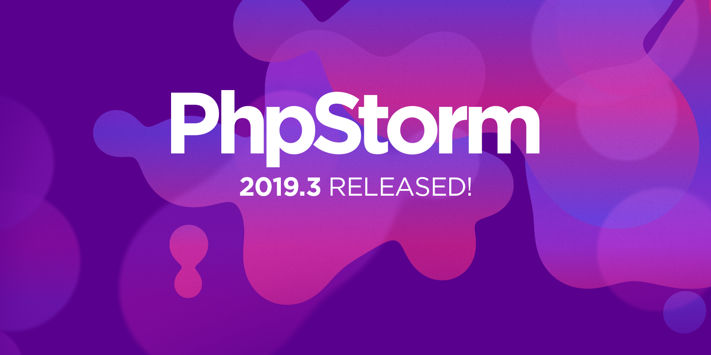
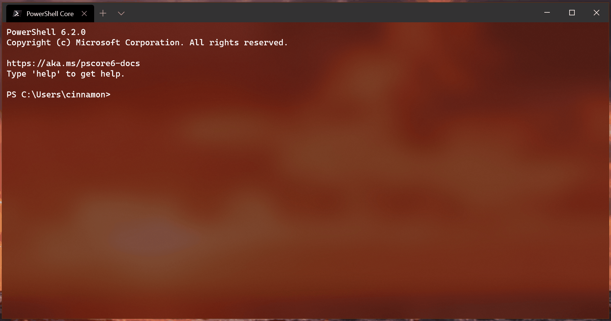

Yazılım Gündemi - 19
18 Kasım-1 Aralık 2019
İçindekiler

< Önceki Gündem | 18 Kasım-1 Aralık 2019 | Sonraki Gündem >
1 Özgür Yazılım Derneği kuruldu
Özgür Yazılım, Richard Stallman tarafından ortaya atılmış ve topluluk tarafından geliştirilmiş bir felsefedir. Her ne kadar Richard Stallman'ın karıştığı son olaylar (Yazılım Gündemi - 10) hoş olmasa da böyle bir felsefeyi ve akımı başlatması açısından bence önemli bir kişiliktir. Bu felsefe dünya genelinde Free Software Foundation oluşumu üzerinden tanıtılmaya ve yayılmaya çalışıyor fakat Türkiye'de de bu konuyu önemseyen kişiler tarafından bir girişim yapılmış ve Özgür Yazılım Derneği, İstanbul'da kurulmuş. Derneğin web sitesinden anladığım kadarıyla sanırım dernek yeni kurulmadı, bir süredir var fakat benim de bu hafta Haftalık Gündem Değerlendirmesi 2019/48'de duyarak haberdar olduğum bir oluşum oldu.
Derneğin web sitesini incelediğimde 3 üyelik tipinin bulunduğunu öğrendim. Bunlar şu şekilde:
- Destekçi Üye: Derneğin faaliyetlerine destek olmak amacıyla maddi veya ayni yardımda bulunan üyelerdir.
- Üye: Dernek tüzüğünün 5⁄1 fıkrası uyarınca hukuken derneğin üyesi olan, Genel Kurulu oluşturan, dernek organlarını seçme ve organlarda görev alma hakkı bulunan üyelerdir.
- Onur Üyeliği: Derneğin amaçları için çalışmış, toplumda bu konuda saygı gören ve eserleri ile dernek amaçlarına katkısı bulunmuş kişiler arasından Genel Kurul kararı ile üyeliğe alınan üyelerdir. Onur üyelerinin aidat yükümlülüğü ve oy hakları yoktur.
Desteki Üye olmak kategorisinden derneğe katılmak bir SMS uzaklığınızda. OYD yazıp 8071'e gönderdiğiniz takdirde Özgür Yazılım Derneğine aylık 20TL bağışta bulunabilir (10 TL için OYD10 yazabilirsiniz) ve sayfada sizden istenen birkaç bilgiyi sağlayarak Destekçi Üye kaydınızı tamamlayabilirsiniz. Diğer bağış yöntemleri için bu sayfayı inceleyebilirsiniz.
Derneğin kurulmasında emeği geçen tüm arkadaşları tebrik ederim. Şu an sektörden biraz uzak olsam da ileride benim de içinde bulunmak istediğim bir oluşum.
2 PHP 7.4.0 stabil sürümü yayınlandı
Uzun bir süredir geliştirilmekte olan PHP programlama dilinin 7.4.0 numaralı ve stabil olan sürümü bu hafta içerisinde yayınlandı. Daha önceki bir yazılım gündemi yazısında da (bkz: Yazılım Gündemi - 3) paylaştığım üzere PHP 7.4'ün yayınlanma süreci büyük oranda planladıkları takvime uygun olarak ilerledi ve tamamlandı. Yine aynı yazılım gündemi yazısında beta süresince olan bazı yeni özellikleri tanıtmıştım bu yazıda da birkaç farklı özelliğe bakalım:
2.1 Unpacking inside arrays (Dizi içerisinde dizi açmak)
JavaScript ve diğer dillerde spreads ismiyle gördüğümüz bu özellik artık PHP'de de var. Yani artık bir dizinin elemanlarını başka bir dizinin içerisine çıkartabileceğiz.
$parca = ['elma', 'armut']; $meyveler = ['muz', 'portakal', ...$parca, 'karpuz']; // dizinin son hali: ['muz', 'portakal', 'elma', 'armut', 'karpuz'];
2.2 Numeric literal separator
Daha kolay okunabilmesi için artık sayıları bu şekilde basamaklara ayırabileceğiz:
6.674_083e-11; // float 299_792_458; // decimal 0xCAFE_F00D; // hexadecimal 0b0101_1111; // binary
Elbette eklenen özellikler olduğu gibi değişen ve kullanımdan kaldırılmaya hazırlanan (deprecate) bazı özellikler de mevcut. Bunlar için şu sayayı ziyaret edebilirsiniz. PHP ile yüklü gelen eklentilerden de şu 3 eklenti artık PHP ile birlikte dağıtılmayacak:
Yeni stabil sürümü indirmek isterseniz bu sayfayı ziyaret edebilirsiniz.
3 Facebook ve Microsoft'dan uzaktan geliştirme işbirliği
Malumunuz devir tüm ihtiyaçların bulut bilişim çözümleriyle giderilmeye çalışıldığı günümüzde konu bize de geldi. Özellikle de son birkaç ayda duyurulan araçlar ve hizmetlerle de (bkz: Yazılım Gündemi - 17) daha popüler olan uzaktan geliştirme (Remote Development) konusundan bahsediyorum. Geçtiğimiz hafta yayınlanan blog yazısı ile birlikte de Microsoft ve Facebook, Visual Studio Code aracının uzaktan geliştirme özelliklerini iyileştirmek için birlikte çalışacağı ilan edildi.
Facebook da elbette isteyen kendi rahat ettiği programlama aracını kullanıyor fakat çoğunluk bir kısım da Facebook'un, Atom editörünü özelleştirerek çıkardığı Nuclide editörünü kullanıyormuş. Fakat geçtiğimiz yıl bu editörün açık kaynak sürümünü emekliye ayırmışlar. Microsoft'un Visual Studio Code'a remote development özelliği eklemeye ve iyileştirmeye başladığından beri bu özellik Facebook içerisinde çok fazla kullanılıyormuş. Geliştiricilere getirdiği kolaylıklar ise:
- Projenin boyutu fark etmeksizin bilgisayarın özelliklerine bağlı kalmadan istediğin projede zorlanmadan geliştirme yapabilmek,
- Birbirinden tamamen bağımsız geliştirme ortamları yaratarak projelerin bağımlılıkları ile ilgili çakışmaları önleyebilmek,
- Projeler arasında hızlı bir şekilde geçiş yapabilmek ve çalıştırabilmek.
Facebook geliştirme ekibi da bu olanaklardan fazlasıyla faydalandıkları için Microsoft'a bu özelliği iyileştirmek için yardım edecekmiş. Planlanan iyileştirmelerden yazıda bahsedilmemiş, bakalım ne gibi çalışmalar yapacaklar.
Açıkcası her ne kadar uzaktan geliştirme konusuna pek sıcak bakmasam da sağladığı kolaylıklar hiç öyle yabana atılır cinsten değil. Özellikle günümüzde taşınabilir geliştirme ortamları önem kazanmaya başladı. Ben de ileride aklımdaki sistemi kurabilirsem kendi evimde bu tarz bir uzaktan geliştirme ortamı yaratmak istiyorum bakalım. Daha önceki bir yazıda sormuştum fakat yeri gelmişken tekrar sorayım, belki farklı konulara da kapı açabiliriz: Siz uzaktan geliştirme konusunda ne düşünüyorsunuz? Tercih eder miydiniz? Yorumlar kısmında konuşalım.
4 Tüm JetBrains IDE'leri 2019.3 sürümüne güncellendi
JetBrains, Kotlin programlama dilini üreten firma olmasından ziyade aynı zamanda çok başarılı ve güçlü programlama araçlarıyla da ünlü bir şirket. Ben de zamanında çok fazla ürününü kullanmış ve ara ara hala kullanan biri olarak söyleyebilirim ki gerçekten geliştirici camiasının ihtiyaçlarını çok iyi analiz eden ve buna göre çözümler üreten bir firmadır. Her neyse konumuza gelelim: Bu hafta tüm JetBrains IDE'lerine güncellemeler geldi. Benim ilgili olduğum bir IDE'ye gelen özelliklere birlikte göz atalım:
4.1 PHPStorm 2019.3

- PHP 7.4 ile gelen bütün özelliklere destek (üstelik deprecate olacakları da gösteriyor),
- PSR-12 Standardı desteği,
- WSL (Windows Subsystem for Linux) desteği,
- PHPDoc iyileştirmeleri,
- Diğer özellikler için alt konu başlığına eklediğim bağlantıya tıklayabilir ya da şuradaki videou izleyebilirsiniz.
Diğer IDE güncellemeleri ise şu şekilde:
5 Windows Terminal Preview v0.7 yayınlandı
Microsoft'un açık kaynak camiasına açılmasından sonra yaptığı birkaç işi gerçekten severek takip ediyorum. Bunlardan birisi Visual Studio Code, diğeri ise Windows Terminal. Her ne kadar geliştirme yapmak için kullandığım dizüstü bilgisayarımda Windows kullanmasam da oyun bilgisayarı olarak kullandığım masaüstü sistemimde Windows var ve bazen orada da programlama testleri yapıyorum. Yeni Windows Terminal'i de WSL (Windows Subsystem for Linux) ile birlikte kullanıyorum. Bu hafta yeni bir önizleme sürümü olan 0.7 sürümünü tanıttılar.

Şekil 4: Benim de uzun zamandır ihtiyaç duyduğum bir terminal sekmesini birden çok parçaya bölme özelliği sonunda geldi, buna sevindim. Şimdiye kadar niye olmadığını hiç anlamadığım bir başka özellik de sekmelerin sırasını değiştirmekti ve o da bu sürümde geldi.
Bunların yanında sekmelerin isimlerini özelleştirme ve bazı görsel iyileştirmeler de katılmış durumda. Ne kadar ön izleme sürümü olsa da, Windows üzerinde programlama yapan arkadaşlara şiddetle tavsiye ederim.
6 Yaklaşan Etkinlikler
7 Diğer Haberler
- Cloudflare, yeni ağ güvenliği aracını açık kaynak olarak duyurdu: Flan Scan.
- Slack, yeni ağ aracını açık kaynak olarak tanıttı: Nebula.
- GitLab 12.5 sürümü duyuruldu.
- YesLogic, yazı tipi şekillendirme motorunu açık kaynak yaptı: Allsorts.
- Kotlin programlama dilinin 1.3.60 sürümü yayınlandı.
- Julia programlama dilinin 1.3.0 sürümü yayınlandı.
- Haskell programlama dili 2019 topluluk anketi sonuçları açıklandı.
- Kaynak koddan programın akışını görselleştirmeye yarayan araç artık açık kaynak ve özgür yazılım: Sourcetrail.
- Fonksiyonun birden çok değer döndürmesine olanak sağlayan WebAssembly eklentisi prototipi yayınlandı: multi-value.
- GraalVM 19.3, JDK 11 desteğiyle birlikte duyuruldu.
- MinGW Distro v17.0 çıktı. İndirme Adresi
- JavaFuzz 1.22 sürümü çıktı.
- Coreboot 4.11 sürümü çıktı.
- SBCL 1.5.9 sürümü çıktı.
8 Lisans

Yazılım Gündemi - 19 yazısı Eren Hatırnaz tarafından Creative Commons Atıf-GayriTicari-AynıLisanslaPaylaş 4.0 Uluslararası Lisansı (CC BY-NC-SA 4.0) ile lisanslanmıştır.